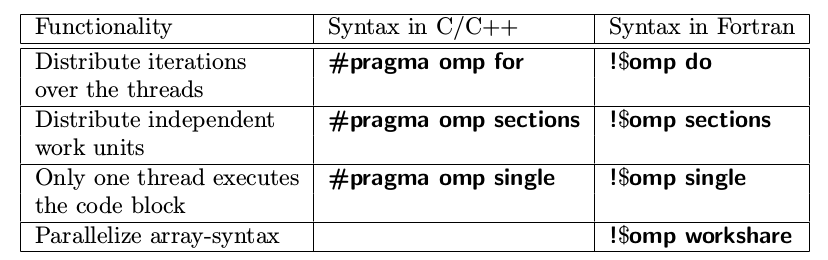
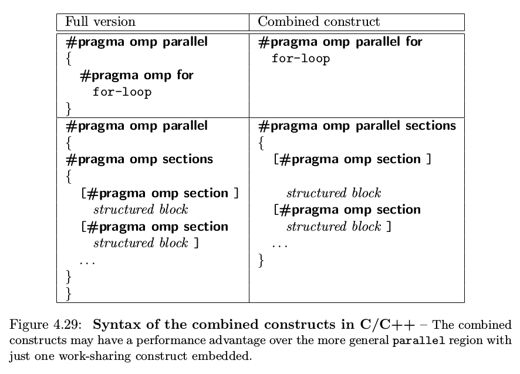
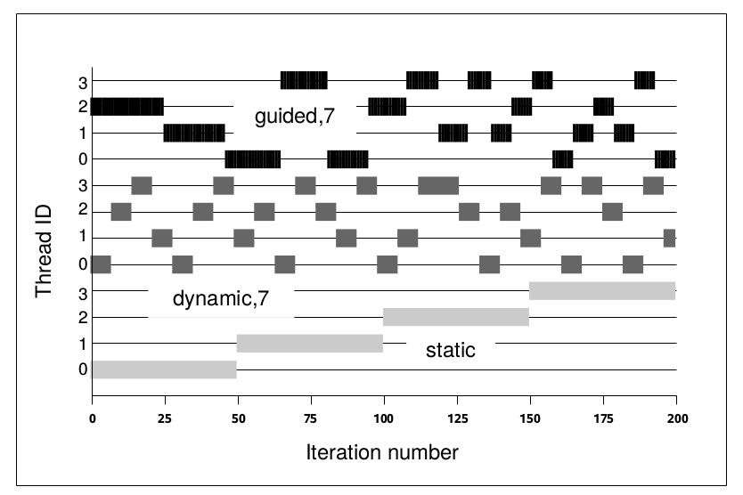

编译制导指令
- 前言
- Parallel Construct(并行域结构)
- Work-sharing Construct(任务分担结构)
- Clauses to Control Parallel and Work-Sharing Constructs
- Synchronization Constructs(同步)
前言
OpenMP通过在串行程序中插入编译制导指令, 来实现并行化, 支持OpenMP的编译器可以识别, 处理这些指令并实现对应的功能. 所有的编译制导指令都是以#pragma omp开始, 后面跟具体的功能指令(directive)或者命令. 一般格式如下所示:
#pragma omp directive [clause [[,] clause]...]
structured block
Parallel Construct(并行域结构)
为了使程序可以并行执行, 我们首先要构造一个并行域(parallel region), 在这里我们使用parallel指令来实现并行域的构造, 其语法形式如下
#pragma omp parallel [clause [[,] clause]...]
structured block
我们看到其实就是在omp后面加了一个parallel关键字, 该指令主要作用就是用来构造并行域, 创建线程组并且并发执行任务. 需要注意的是该指令只保证代码以并行的方式执行, 但是并不负责线程之间的任务分发. 在并行域执行结束之后, 会有一个隐式的屏障(barrier), 来同步所有的该区域内的所有线程. 下面是一个使用示例:
void parallel_construct() {
#pragma omp parallel
{
printf("Hello from thread %d\n", omp_get_thread_num());
}
}
其中omp_get_thread_num()用来获取当前线程的编号, 该函数是定义在<omp.h>中的. 输出结果如下:
Hello from thread 1
Hello from thread 3
Hello from thread 0
Hello from thread 2
parallel指令后面可以跟一些子句(clause), 如下所示
if(scalar-expression)
num_threads(integer-expression)
private(list)
firstprivate(list)
shared(list)
default(none | shared)
copyin(list)
reduction(operator:list)
在后面会介绍这些从句的用法
Work-sharing Construct(任务分担结构)
任务分担指令主要用于为线程分配不同的任务, 一个任务分担域(work-sharing region)必须要和一个活跃(active)的并行域(parellel region)关联, 如果任务分担指令处于一个不活跃的并行域或者处于一个串行域中, 那么该指令就会被忽略. 在C/C++有3个任务分担指令: for、sections、single, 严格意义上讲只有for和sections是任务分担指令, 而single只是协助任务分担的指令.

for
用于for循环中, 将不同的循环分配给不同的线程, 语法如下所示:
#pragma omp for [clause[[,] clause]...]
for-loop
下面是一个使用示例:
void parallel_for() {
int n = 9;
int i = 0;
#pragma omp parallel shared(n) private(i)
{
#pragma omp for
for(i = 0; i < n; i++) {
printf("Thread %d executes loop iteration %d\n", omp_get_thread_num(),i);
}
}
}
下面是程序执行结果
Thread 2 executes loop iteration 5
Thread 2 executes loop iteration 6
Thread 3 executes loop iteration 7
Thread 3 executes loop iteration 8
Thread 0 executes loop iteration 0
Thread 0 executes loop iteration 1
Thread 0 executes loop iteration 2
Thread 1 executes loop iteration 3
Thread 1 executes loop iteration 4
在上面的程序中共有4个线程执行9次循环, 线程0分到了3次, 剩余的线程分到了2次, 这是一种常用的调度方式, 即假设有n次循环迭代, t个线程, 那么每个线程分配到n/t 或者 n/t + 1 次连续的迭代计算, 但是某些情况下使用这种方式并不是最好的选择, 我们可以使用schedule 来指定调度方式, 在后面会具体介绍. 下面是for 指令后面可以跟的一些子句:
private(list)
fistprivate(list)
lastprivate(list)
reduction(operator:list)
ordered
schedule(kind[,chunk_size])
nowait
sections
sections指令可以为不同的线程分配不同的任务, 语法如下所示:
#pragma omp sections [clause[[,] clause]...]
{
[#pragma omp section]
structured block
[#pragma omp section]
structured block
...
}
从上面的代码中我们可以看到, sections将代码分为多个section, 每个线程处理一个section, 下面是一个使用示例:
/**
* 使用#pragma omp sections 和 #pragma omp section, 来使不同的线程执行不同的任务
* 如果线程数量大于section数量, 那么多余的线程会处于空闲状态(idle)
* 如果线程数量少于section数量, 那么一个线程会执行多个section代码
*/
void funcA() {
printf("In funcA: this section is executed by thread %d\n",
omp_get_thread_num());
}
void funcB() {
printf("In funcB: this section is executed by thread %d\n",
omp_get_thread_num());
}
void parallel_section() {
#pragma omp parallel
{
#pragma omp sections
{
#pragma omp section
{
(void)funcA();
}
#pragma omp section
{
(void)funcB();
}
}
}
}
下面是执行结果:
In funcA: this section is executed by thread 3
In funcB: this section is executed by thread 0
下面是sections后面可以跟的一些子句
private(list)
firstprivate(list)
lastprivate(list)
reduction(operator:list)
nowait
single
single 指令用来指定某段代码块只能被一个线程来执行, 如果没有nowait字句, 所有线程在 single 指令结束处隐市同步点同步, 如果single指令有nowait从句, 则别的线程直接往下执行. 不过single指令并不指定哪个线程来执行. 语法如下所示:
#pragma omp single [clause[[,] clause]...]
structured block
下面是一个使用示例
void parallel_single() {
int a = 0, n = 10, i;
int b[n];
#pragma omp parallel shared(a, b) private(i)
{
// 只有一个线程会执行这段代码, 其他线程会等待该线程执行完毕
#pragma omp single
{
a = 10;
printf("Single construct executed by thread %d\n", omp_get_thread_num());
}
// A barrier is automatically inserted here
#pragma omp for
for(i = 0; i < n; i++) {
b[i] = a;
}
}
printf("After the parallel region:\n");
for (i=0; i<n; i++)
printf("b[%d] = %d\n",i,b[i]);
}
下面是执行结果:
Single construct executed by thread 2
After the parallel region:
b[0] = 10
b[1] = 10
b[2] = 10
b[3] = 10
b[4] = 10
b[5] = 10
b[6] = 10
b[7] = 10
b[8] = 10
b[9] = 10
下面是single指令后面可以跟随的子句:
private(list)
firstprivate(list)
copyprivate(list)
nowait
Combined Parallel Work-Sharing Constructs
将parallel指令和work-sharing指令结合起来, 使代码更加简洁. 如下面的代码
#pragma omp parallel
{
#pragma omp for
for(.....)
}
可以写为
#pragma omp parallel for
for(.....)
具体的参见下图:  使用这些组合结构体(combined constructs)不仅增加程序的可读性, 而且对程序的性能有一定的帮助. 当使用这些组合结构体的时候, 编译器可以知道下一步要做什么, 从而可能会生成更高效的代码.
Clauses to Control Parallel and Work-Sharing Constructs
OpenMP指令后面可以跟一些子句, 用来控制构造器的行为. 下面介绍一些常用的子句.
shared
shared子句用来指定哪些数据是在线程之间共享的, 语法形式为shared(list), 下面是其使用方法:
#pragma omp parallel for shared(a)
for(i = 0; i < n; i++)
{
a[i] += i;
}
在并行域中使用共享变量时, 如果存在写操作, 需要对共享变量加以保存, 因为可能存在多个线程同时修改共享变量或者在一个线程读取共享变量时另外一个变量在更新共享变量的情况, 而这些情况都可能会引起程序错误.
private
private子句用来指定哪些数据是线程私有的, 即每个线程具有变量的私有副本, 线程之间互不影响. 其语法形式为private(list), 使用方法如下:
void test_private() {
int n = 8;
int i=2, a = 3;
// i,a 定义为private之后不改变原先的值
#pragma omp parallel for private(i, a)
for ( i = 0; i<n; i++)
{
a = i+1;
printf("In for: thread %d has a value of a = %d for i = %d\n", omp_get_thread_num(),a,i);
}
printf("\n");
printf("Out for: thread %d has a value of a = %d for i = %d\n", omp_get_thread_num(),a,i);
}
下面是程序运行结果:
In for: thread 2 has a value of a = 5 for i = 4
In for: thread 2 has a value of a = 6 for i = 5
In for: thread 3 has a value of a = 7 for i = 6
In for: thread 3 has a value of a = 8 for i = 7
In for: thread 0 has a value of a = 1 for i = 0
In for: thread 0 has a value of a = 2 for i = 1
In for: thread 1 has a value of a = 3 for i = 2
In for: thread 1 has a value of a = 4 for i = 3
Out for: thread 0 has a value of a = 3 for i = 2
对于private子句中的变量, 需要注意一下两点:
- 不论该变量之前有没有初始值, 在进入并行域之后都是未初始化的.
- 并行域中对变量的修改只在该域中起作用, 当离开并行域后, 变量值仍然是未进入并行域之前的值
lastprivate
lastprivate会在退出并行域时, 将其修饰变量的最后取值(last value)保存下来, 可以作用于 for 和 sections, 语法格式为lastprivate(list). 关于last value的定义: 如果是作用于for指令, 那么last value就是指串行执行的最后一次循环的值；如果是作用于sections指令, 那么last value就是执行完最后一个包含该变量的section之后的值. 使用方法如下:
void test_last_private() {
int n = 8;
int i=2, a = 3;
// lastprivate 将for中最后一次循环(i == n-1) a 的值赋给a
#pragma omp parallel for private(i) lastprivate(a)
for ( i = 0; i<n; i++)
{
a = i+1;
printf("In for: thread %d has a value of a = %d for i = %d\n", omp_get_thread_num(),a,i);
}
printf("\n");
printf("Out for: thread %d has a value of a = %d for i = %d\n", omp_get_thread_num(),a,i);
}
程序执行结果为:
In for: thread 3 has a value of a = 7 for i = 6
In for: thread 3 has a value of a = 8 for i = 7
In for: thread 2 has a value of a = 5 for i = 4
In for: thread 2 has a value of a = 6 for i = 5
In for: thread 1 has a value of a = 3 for i = 2
In for: thread 0 has a value of a = 1 for i = 0
In for: thread 0 has a value of a = 2 for i = 1
In for: thread 1 has a value of a = 4 for i = 3
Out for: thread 0 has a value of a = 8 for i = 2
firstprivate
firstprivate 子句用于为private变量提供初始值. 使用firstprivate修饰的变量会使用在前面定义的同名变量的值作为其初始值. 语法形式为firstprivate(list), 使用方法如下:
void test_first_private() {
int n = 8;
int i=0, a[n];
for(i = 0; i < n ;i++) {
a[i] = i+1;
}
#pragma omp parallel for private(i) firstprivate(a)
for ( i = 0; i<n; i++)
{
printf("thread %d: a[%d] is %d\n", omp_get_thread_num(), i, a[i]);
}
}
执行结果如下:
thread 0: a[0] is 1
thread 0: a[1] is 2
thread 2: a[4] is 5
thread 2: a[5] is 6
thread 3: a[6] is 7
thread 3: a[7] is 8
thread 1: a[2] is 3
thread 1: a[3] is 4
default
default子句用于设置变量默认的data-sharing属性, 在C/C++中只支持default(none | shared), 其中default(shared)设置所有的变量默认为共享的, default(none)取消变量的默认属性, 需要显示指定变量是共享的还是私有的.
nowait
用于取消任务分担结构(work-sharing constructs)中的隐式屏障(implicit barrier), 下面是一个使用示例:
void test_nowait() {
int i, n =6;
#pragma omp parallel
{
#pragma omp for nowait
for(i = 0; i < n; i++) {
printf("thread %d: ++++\n", omp_get_thread_num());
}
#pragma omp for
for(i = 0; i < n; i++) {
printf("thread %d: ----\n", omp_get_thread_num());
}
}
}
如果第一个 for 后面没有加 nowait , 那么输出如下所示:
thread 3: ++++
thread 0: ++++
thread 0: ++++
thread 2: ++++
thread 1: ++++
thread 1: ++++
thread 0: ----
thread 0: ----
thread 3: ----
thread 1: ----
thread 1: ----
thread 2: ----
因为for指令有一个隐式的屏障, 会同步所有的线程直到第一个for循环执行完, 再继续往下执行. 加上 nowait 之后就消除了这个屏障, 使线程执行完第一个for循环之后无需再等待其他线程就可以去执行第二个for循环的内容, 下面是加上nowait之后的输出:
thread 2: ++++
thread 2: ----
thread 1: ++++
thread 1: ++++
thread 1: ----
thread 1: ----
thread 3: ++++
thread 3: ----
thread 0: ++++
thread 0: ++++
thread 0: ----
thread 0: ----
使用nowait时需要注意前后for之间有没有依赖关系, 如果第二个for循环需要用到第一个for循环的结果, 那么使用nowait就可能会造成程序错误.
schedule
schedule子句只作用于循环结构(loop construct), 它用来设置循环任务的调度方式. 语法形式为schedule(kind[,chunk_size]), 其中kind的取值有 static, dynamic, guided, auto, runtime, chunk_size是可选项,可以指定也可以不指定. 下面是使用方法:
void test_schedule() {
int i, n = 10;
#pragma omp parallel for default(none) schedule(static, 2) \
private(i) shared(n)
for(i = 0; i < n; i++) {
printf("Iteration %d executed by thread %d\n", i, omp_get_thread_num());
}
}
下面介绍一下各个取值的含义, 假设有n次循环, t个线程
static
静态调度, 如果不指定chunk_size , 那么会为每个线程分配 n/t 或者 n/t+1(不能除尽)次连续的迭代计算, 如果指定了 chunk_size, 那么每次为线程分配chunk_size次迭代计算, 如果第一轮没有分配完, 则循环进行下一轮分配, 假设n=8, t=4, 下表给出了chunk_size未指定、等于1、等于3时的分配情况.
| 线程编号\chunk_size | 未指定 | chunk_size = 1 | chunk_size = 3 |
|---|---|---|---|
| 0 | 0 1 | 0 4 | 0 1 2 |
| 1 | 2 3 | 1 5 | 3 4 5 |
| 2 | 4 5 | 2 6 | 6 7 |
| 3 | 6 7 | 3 7 |
dynamic 动态调度, 动态为线程分配迭代计算, 只要线程空闲就为其分配任务, 计算快的线程分配到更多的迭代. 如果不指定chunk_size参数, 则每次为一个线程分配一次迭代循环(相当于chunk_size=1), 若指定chunk_size, 则每次为一个线程分配chunk_size次迭代循环. 在动态调度下, 分配结果是不固定的, 重复执行同一个程序, 每次的分配结果一般来说是不同的, 下面给出n=12, t=4时, chunk_size未指定、等于2时的分配情况(运行两次)
| 线程编号\chunk_size | 未指定(第一次) | 未指定(第二次) | chunk_size=2(第一次) | chunk_size = 2(第二次) |
|---|---|---|---|---|
| 0 | 2 | 0 | 4 5 8 9 10 11 | 0 1 |
| 1 | 0 4 5 6 7 8 9 10 11 | 3 | 0 1 | 4 5 |
| 2 | 3 | 1 4 5 6 7 8 9 10 11 | 2 3 | 6 7 |
| 3 | 1 | 2 | 6 7 | 2 3 8 9 10 11 |
使用动态动态可以一定程度减少负载不均衡的问题, 但是需要注意任务动态申请时也会有一定的开销.
guided guided调度是一种指定性的启发式自调度方法. 开始时每个线程会分配到较大的迭代块, 之后分配到的迭代块的大小会逐渐递减. 如果指定chunk_size, 则迭代块会按指数级下降到指定的chunk_size大小, 如果没有指定size参数, 那么迭代块大小最小会降到1(相当于chunk_size=1). 和动态调度一样, 执行块的线程会分到更多的任务, 不同的是这里迭代块的大小是变化的. 同样使用guided调度的分配结果也不是固定的, 重复执行会得到不同的分配结果. 下面给出n=20, t=4, chunk_size未指定、chunk_size=3时的分配情况(执行两次)
| 线程编号\chunk_size | 未指定(第一次) | 未指定(第二次) | chunk_size=3(第一次) | chunk_size = 3(第二次) |
|---|---|---|---|---|
| 0 | 12 13 | 0 1 2 3 4 | 0 1 2 3 4 | 5 6 7 8 18 19 |
| 1 | 5 6 7 8 16 17 18 19 | 5 6 7 8 | 9 10 11 | 9 10 11 |
| 2 | 0 1 2 3 4 14 15 | 9 10 11 14 15 16 17 18 19 | 5 6 7 8 15 16 17 18 19 | 0 1 2 3 4 15 16 17 |
| 3 | 9 10 11 | 12 13 | 12 13 14 | 12 13 14 |
当设置chunk_size=3时, 因为最后只剩下18、19两次循环, 所以最后执行的那个线程只分配到2次循环.
下面的图展示了当循环次数为200次, 线程数量为4时, static 、 (dynamic,7) 、(guided, 7) 3种调度方式的分配情况 
runtime 运行时调度, 并不是一种真正的调度方式, 在运行时同时环境变量OMP_SCHEDULE来确定调度类型, 最终的调度类型仍为上面的3种调度方式之一. 在bash下可以使用下面的方式设置:
export OMP_SCHEDULE="static"
auto 将选择的权利赋予编译器, 让编译器自己选择合适的调度决策.
负载不均衡
在for循环中, 如果每次循环之间花费的时间是不同的, 那么就可能出现负载不均衡问题, 下面代码模拟一下这种情况,
void test_schedule() {
int i,j, n = 10;
double start, end;
GET_TIME(start);
#pragma omp parallel for default(none) schedule(static) \
private(i, j) shared(n)
for(i = 0; i < n; i++) {
//printf("Iteration %d executed by thread %d\n", i, omp_get_thread_num());
for(j = 0; j < i; j++) {
system("sleep 0.1");
}
}
GET_TIME(end);
printf("static : use time %.2fs\n", end-start);
GET_TIME(start);
#pragma omp parallel for default(none) schedule(static,2) \
private(i, j) shared(n)
for(i = 0; i < n; i++) {
for(j = 0; j < i; j++) {
system("sleep 0.1");
}
}
GET_TIME(end);
printf("static,2 : use time %.2fs\n", end-start);
GET_TIME(start);
#pragma omp parallel for default(none) schedule(dynamic) \
private(i, j) shared(n)
for(i = 0; i < n; i++) {
for(j = 0; j < i; j++) {
system("sleep 0.1");
}
}
GET_TIME(end);
printf("dynamic : use time %.2fs\n", end-start);
GET_TIME(start);
#pragma omp parallel for default(none) schedule(dynamic, 2) \
private(i, j) shared(n)
for(i = 0; i < n; i++) {
for(j = 0; j < i; j++) {
system("sleep 0.1");
}
}
GET_TIME(end);
printf("dynamic,2: use time %.2fs\n", end-start);
GET_TIME(start);
#pragma omp parallel for default(none) schedule(guided) \
private(i, j) shared(n)
for(i = 0; i < n; i++) {
for(j = 0; j < i; j++) {
system("sleep 0.1");
}
}
GET_TIME(end);
printf("guided : use time %.2fs\n", end-start);
GET_TIME(start);
#pragma omp parallel for default(none) schedule(guided, 2) \
private(i, j) shared(n)
for(i = 0; i < n; i++) {
for(j = 0; j < i; j++) {
system("sleep 0.1");
}
}
GET_TIME(end);
printf("guided,2 : use time %.2fs\n", end-start);
}
GET_TIME的定义如下:
#ifndef _TIMER_H_
#define _TIMER_H_
#include <sys/time.h>
#include <time.h>
#include <stdio.h>
#define GET_TIME(now) { \
struct timeval t; \
gettimeofday(&t, NULL); \
now = t.tv_sec + t.tv_usec/1000000.0; \
}
#endif
在上面的代码中, 对于第一个for循环, i越大, 循环消耗的时间越多, 下面是n=10时的输出
static : use time 1.74s
static,2 : use time 1.84s
dynamic : use time 1.53s
dynamic,2: use time 1.84s
guided : use time 1.63s
guided,2 : use time 1.53s
下面是n=20的输出
static : use time 8.67s
static,2 : use time 6.42s
dynamic : use time 5.62s
dynamic,2: use time 6.43s
guided : use time 5.92s
guided,2 : use time 6.43s
对于static调度, 如果不指定chunk_size的值, 则会将最后几次循环分给最后一个线程, 而最后几次循环是最耗时的, 其他线程执行完各自的工作需要等待这个线程执行完毕, 浪费了系统资源, 这就造成了负载不均衡. dynamic和guided可以在一定程度上减轻负载不均衡, 但是也不是绝对的, 最终选用哪种方式还是要根据具体的问题.
Synchronization Constructs(同步)
同步指令主要用来控制多个线程之间对于共享变量的访问. 它可以保证线程以一定的顺序更新共享变量, 或者保证两个或多个线程不同时修改共享变量.
barrier
同步路障(barrier), 当线程遇到路障时必须要停下等待, 直到并行区域中的所有线程都到达路障点, 线程才继续往下执行. 在每一个并行域和任务分担域的结束处都会有一个隐式的同步路障, 即在parallel、for、sections、single构造的区域之后会有一个隐式的路障, 因此在很多时候我们无需显示的插入路障. 下面是语法形式:
#pragma omp barrier
下面是一个使用示例:
void print_time(int tid, char* s ) {
int len = 10;
char buf[len];
NOW_TIME(buf, len);
printf("Thread %d %s at %s\n", tid, s, buf);
}
void test_barrier() {
int tid;
#pragma omp parallel private(tid)
{
tid = omp_get_thread_num();
if(tid < omp_get_num_threads() / 2)
system("sleep 3");
print_time(tid, "before barrier ");
#pragma omp barrier
print_time(tid, "after barrier ");
}
}
其中NOW_TIME的定义如下
#ifndef _TIMER_H_
#define _TIMER_H_
#include <sys/time.h>
#include <time.h>
#include <stdio.h>
#define NOW_TIME(buf, len) { \
time_t nowtime; \
nowtime = time(NULL); \
struct tm *local; \
local = localtime(&nowtime); \
strftime(buf, len, "%H:%M:%S", local); \
}
#endif
在上面的代码中有一半的线程(tid < 2) 会睡眠3秒之后再继续往下执行, 首先看看不加路障的输出, 即去掉#pragma omp barrier
Thread 3 before barrier at 16:55:44
Thread 2 before barrier at 16:55:44
Thread 3 after barrier at 16:55:44
Thread 2 after barrier at 16:55:44
Thread 1 before barrier at 16:55:47
Thread 0 before barrier at 16:55:47
Thread 0 after barrier at 16:55:47
Thread 1 after barrier at 16:55:47
下面上加上路障的输出结果:
Thread 3 before barrier at 17:05:29
Thread 2 before barrier at 17:05:29
Thread 0 before barrier at 17:05:32
Thread 1 before barrier at 17:05:32
Thread 0 after barrier at 17:05:32
Thread 1 after barrier at 17:05:32
Thread 2 after barrier at 17:05:32
Thread 3 after barrier at 17:05:32
通过对比我们可以看出, 加上路障之后, 各线程要在路障点同步一次, 然后再继续往下执行.
ordered
ordered结构允许在并行域中以串行的顺序执行一段代码, 如果我们在并行域中想按照顺序打印被不同的线程计算的数据, 就可以使用这个子句, 下面是语法形式
#pragma omp ordered
structured block
在使用时需要注意一下两点
- ordered 只作用于循环结构(loop construct)
- 使用ordered时需要在构造并行域的时候加上ordered子句, 如下面所示
#pragma omp parallel for ordered
下面是一个使用示例
void test_order() {
int i, tid, n = 5;
int a[n];
for(i = 0; i < n; i++) {
a[i] = 0;
}
#pragma omp parallel for default(none) ordered schedule(dynamic) \
private (i, tid) shared(n, a)
for(i = 0; i < n; i++) {
tid = omp_get_thread_num();
printf("Thread %d updates a[%d]\n", tid, i);
a[i] += i;
#pragma omp ordered
{
printf("Thread %d printf value of a[%d] = %d\n", tid, i, a[i]);
}
}
}
下面是程序运行结果:
Thread 0 updates a[0]
Thread 2 updates a[2]
Thread 1 updates a[3]
Thread 0 printf value of a[0] = 0
Thread 0 updates a[4]
Thread 3 updates a[1]
Thread 3 printf value of a[1] = 1
Thread 2 printf value of a[2] = 2
Thread 1 printf value of a[3] = 3
Thread 0 printf value of a[4] = 4
从输出结果我们可以看到, 在update时是以乱序的顺序更新, 但是在打印时是以串行顺序的形式打印.
critical
临界区(critical), 临界区保证在任意一个时间段内只有一个线程执行该区域中的代码, 一个线程要进入临界区必须要等待临界区处于空闲状态, 下面是语法形式
#pragma omp critical [(name)]
structured block
其中name是为临界区指定的一个名字. 下面是一个求和的使用示例, 注意这里只是用来说明临界区的作用, 对于求和操作我们可以使用reduction指令
void test_critical() {
int n = 100, sum = 0, sumLocal, i, tid;
int a[n];
for(i = 0; i < n; i++) {
a[i] = i;
}
#pragma omp parallel shared(n, a, sum) private (tid, sumLocal)
{
tid = omp_get_thread_num();
sumLocal = 0;
#pragma omp for
for(i = 0; i < n; i++) {
sumLocal += a[i];
}
#pragma omp critical(update_sum)
{
sum += sumLocal;
printf("Thread %d: sumLocal = %d sum =%d\n", tid, sumLocal, sum);
}
}
printf("Value of sum after parallel region: %d\n",sum);
}
在该代码中, sum是全局的, localSum是每个线程执行完各自的求和任务后的和值, 将每个线程的sumLocal加给sum, 就是最后的和值. 在执行sum+=sunLocal操作时, 需要保证一次只有一个线程执行该操作, 因此这里使用了临界区, 下面是运行结果:
Thread 2: sumLocal = 1550 sum =1550
Thread 3: sumLocal = 2175 sum =3725
Thread 1: sumLocal = 925 sum =4650
Thread 0: sumLocal = 300 sum =4950
Value of sum after parallel region: 4950
下面是将临界区去掉的运行结果(运行结果不是固定的, 这里只是其中一种情况):
Thread 2: sumLocal = 1550 sum =1550
Thread 3: sumLocal = 2175 sum =2475
Thread 1: sumLocal = 925 sum =925
Thread 0: sumLocal = 300 sum =300
Value of sum after parallel region: 2475
通过对比我们可以看到临界区保证了程序的正确性.
atomic
原子操作, 可以锁定一个特殊的存储单元(可以是一个单独的变量,也可以是数组元素), 使得该存储单元只能原子的更新, 而不允许让多个线程同时去写. atomic只能作用于单条赋值语句, 而不能作用于代码块. 语法形式为:
#pragma omp atomic
statement
在C/C++中, statement必须是下列形式之一
x++, x--, ++x, --xx binop= expr其中binop是二元操作符:+, -, *, /, &, ^, |, <<, >>之一
atomic的可以有效的利用的硬件的原子操作机制来控制多个线程对共享变量的写操作, 效率较高, 下面是一个使用示例
void test_atomic() {
int counter=0, n = 1000000, i;
#pragma omp parallel for shared(counter, n)
for(i = 0; i < n; i++) {
#pragma omp atomic
counter += 1;
}
printf("counter is %d\n", counter);
}
对于下面的情况
#pragma omp atomic
ic += func();
atomic只保证ic的更新是原子的, 即不会被多个线程同时更新, 但是不会保证func函数的执行是原子的, 即多个线程可以同时执行func函数, 如果要使func的执行也是原子的, 可以使用临界区.
locks
互斥锁, 提供了一个更底层的机制来处理同步的问题, 比使用critical和atomic有更多的灵活性, 但也相对更加复杂一些. openmp提供了两种类型的锁--简单锁(simple locks) 和 嵌套锁(nested locks), 对于简单锁来说, 如果其处于锁住的状态, 那么它就可能无法再次被上锁. 而对于嵌套锁来说, 可以被同一个线程上锁多次. 下面是简单锁的几个函数
void omp_init_lock(omp_lock_t *lck) // 初始化互斥锁
void omp_destroy_lock(omp_lock_t *lck) // 销毁互斥锁
void omp_set_lock(omp_lock_t *lck) // 获得互斥锁
void omp_unset_lock(omp_lock_t *lck) // 释放互斥锁
bool omp_test_lock(omp_lock_t *lck) // 尝试获得互斥锁, 如果获得成功返回true, 否则返回false
嵌套锁的函数和简单锁略有不同, 如下所示
void omp_init_nest_lock(omp_nest_lock_t *lck)
void omp_destroy_nest_lock(omp_nest_lock_t *lck)
void omp_set_nest_lock(omp_nest_lock_t *lck)
void omp_unset_nest_lock(omp_nest_lock_t *lck)
void omp_test_nest_lock(omp_nest_lock_t *lck)
下面是一个使用示例
void test_lock() {
omp_lock_t lock;
int i,n = 4;
omp_init_lock(&lock);
#pragma omp parallel for
for(i = 0; i < n; i++) {
omp_set_lock(&lock);
printf("Thread %d: +\n", omp_get_thread_num());
system("sleep 0.1");
printf("Thread %d: -\n", omp_get_thread_num());
omp_unset_lock(&lock);
}
omp_destroy_lock(&lock);
}
其中system("sleep 0.1") 是为了两次的输出有个间隔, 以便和不加锁时的情况进行对比. 下面是程序的输出:
Thread 1: +
Thread 1: -
Thread 2: +
Thread 2: -
Thread 3: +
Thread 3: -
Thread 0: +
Thread 0: -
下面是去掉锁的输出
Thread 3: +
Thread 2: +
Thread 0: +
Thread 1: +
Thread 2: -
Thread 3: -
Thread 0: -
Thread 1: -
master
用于指定一段代码只由主线程执行. master指令和single指令的区别如下:
- master指令包含的代码段只有主线程执行, 而single指令包含的代码可以由任意一个线程执行.
- master指令在结束处没有隐式同步, 也不可以使用nowait从句
下面是一个使用示例:
void test_master() {
int a, i, n = 5;
int b[n];
#pragma omp parallel shared(a, b) private(i)
{
#pragma omp master
{
a = 10;
printf("Master construct is executed by thread %d\n", omp_get_thread_num());
}
#pragma omp barrier
#pragma omp for
for(i = 0; i < n; i++)
b[i] = a;
}
printf("After the parallel region:\n");
for(i = 0; i < n; i++)
printf("b[%d] = %d\n", i, b[i]);
}
下面是输出结果
Master construct is executed by thread 0
After the parallel region:
b[0] = 10
b[1] = 10
b[2] = 10
b[3] = 10
b[4] = 10